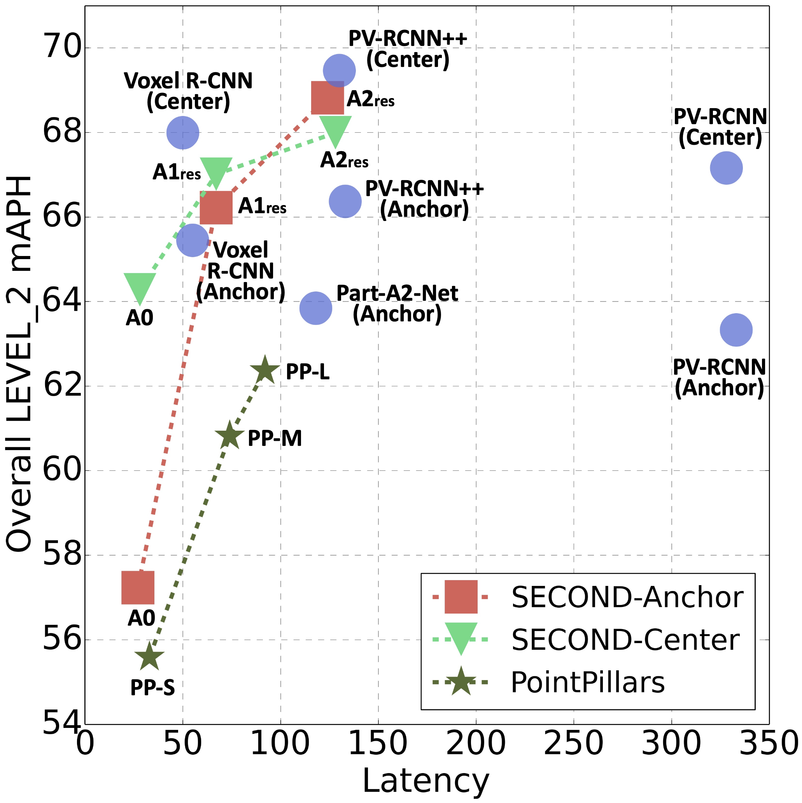
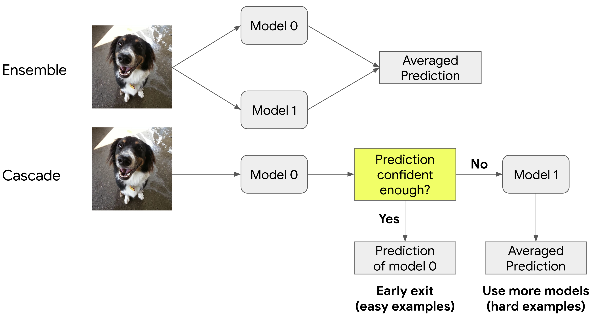
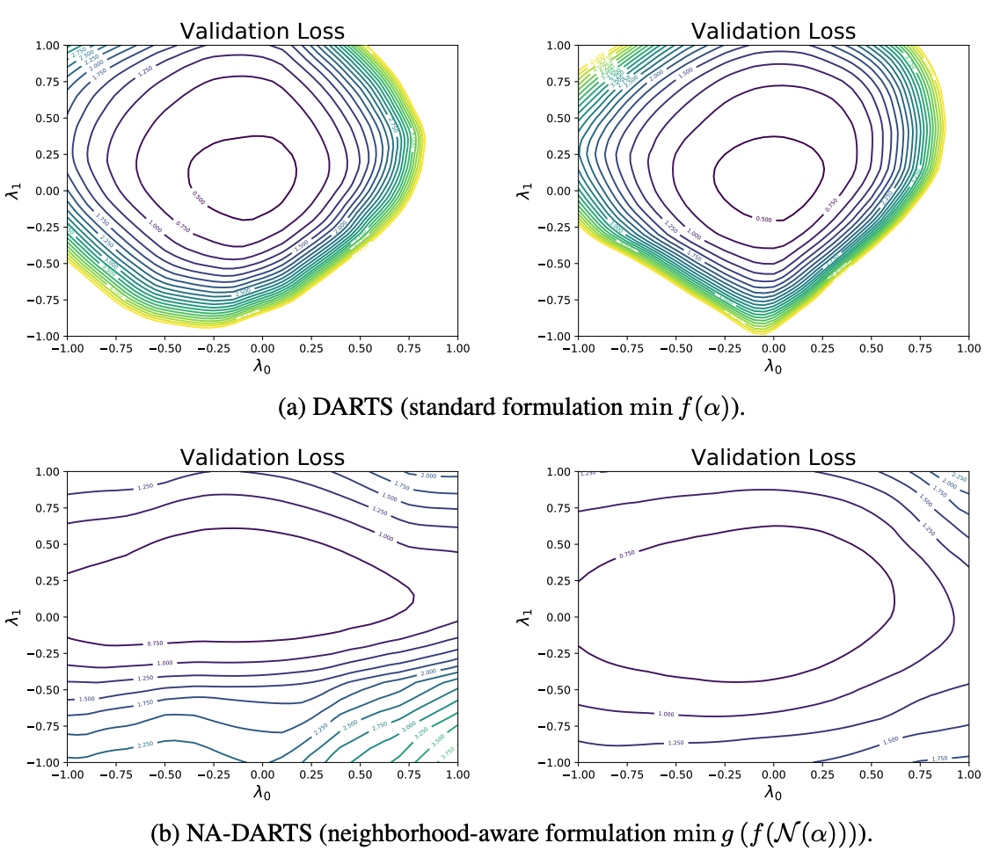
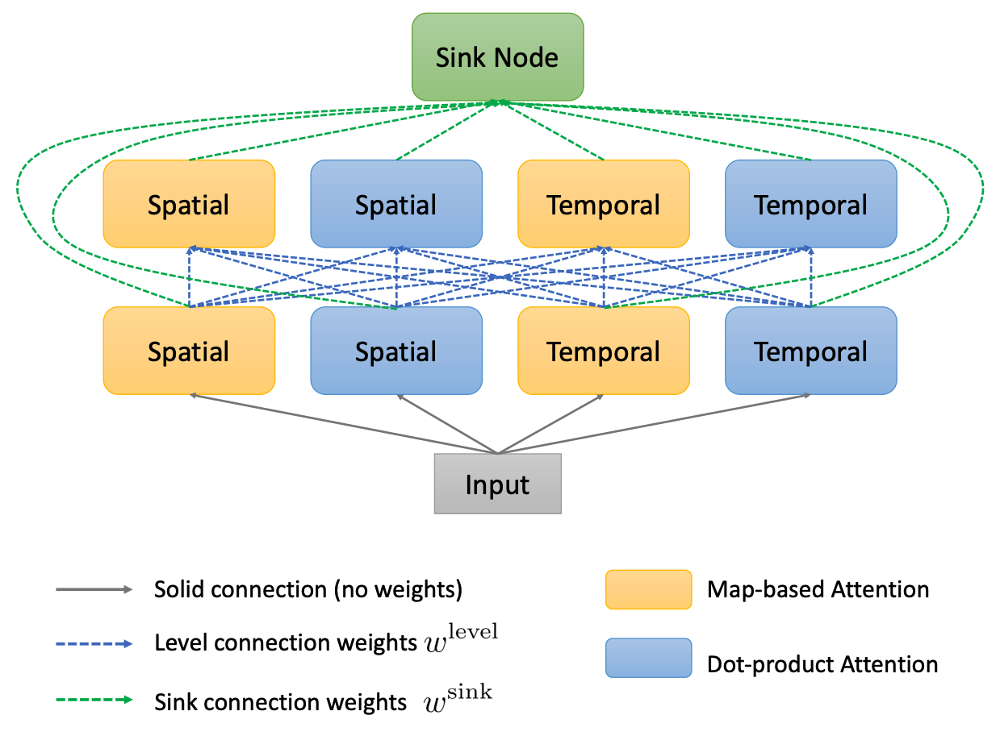
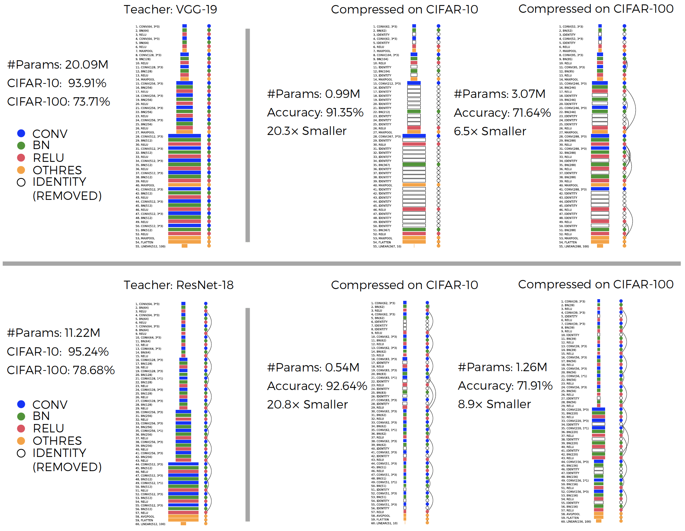
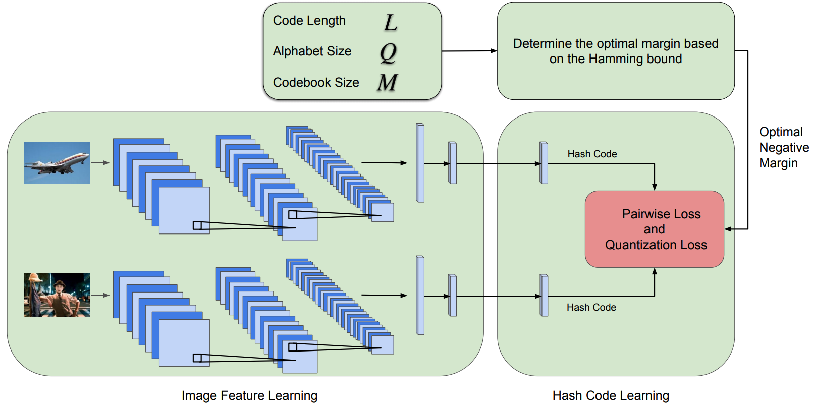
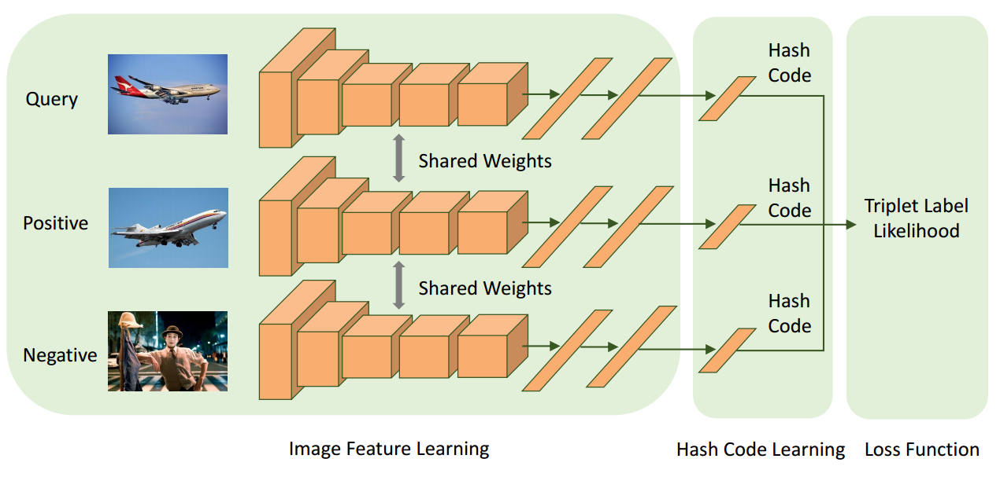
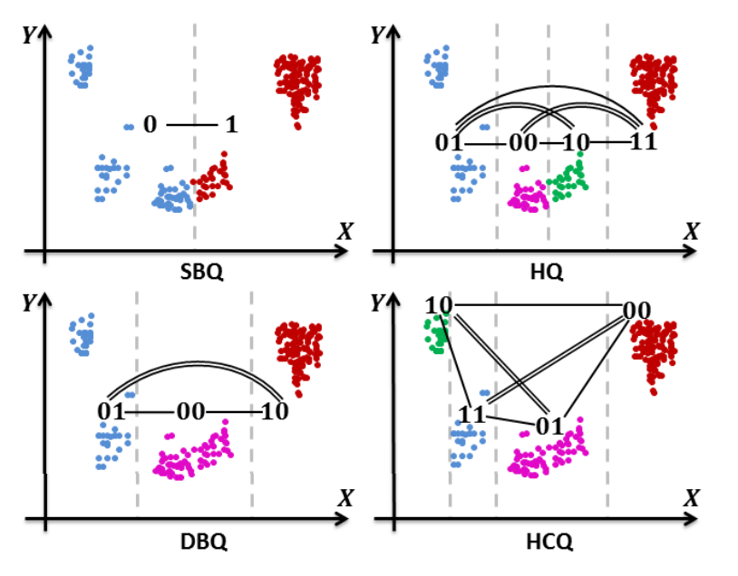

|
Xiaofang Wang
I am a Research Scientist at Meta Reality Lab. I received my Ph.D. from the Robotics Institute at Carnegie Mellon University (CMU), where I was fortunate to work with Prof. Kris Kitani. Before joining CMU, I received my B.S. in Computer Science from Peking University.
Email /
CV /
Google Scholar /
Github
|
|
|
Research
I am interested in computer vision, deep learning and machine learning. My recent focus is neural architecture search.
|
|

|
Cost-Aware Evaluation and Model Scaling for LiDAR-Based 3D Object Detection
Xiaofang Wang, Kris M. Kitani
Arxiv 2022
SOTA performance without SOTA detector architectures
Simply scaling the backbone in SECOND can already match the state-of-the-art performance on the Waymo Open Dataset.
|
|

|
Wisdom of Committees: An Overlooked Approach To Faster and More Accurate Models
Xiaofang Wang, Dan Kondratyuk, Eric Christiansen, Kris M. Kitani, Yair Alon, Elad Eban
International Conference on Learning Representations (ICLR), 2022
[Poster]
[Google AI Blog]
State-of-the-art efficiency without any architecture tuning
Even the most simplistic method for building ensembles or cascades from existing pre-trained models can match or exceed the accuracy of state-of-the-art models while being drastically more efficient.
|
|

|
Neighborhood-Aware Neural Architecture Search
Xiaofang Wang, Shengcao Cao, Mengtian Li, Kris M. Kitani
British Machine Vision Conference (BMVC), 2021
Finding flat-minima archtectures in the search space
Towards better generalization, we propose a novel neighborhood-aware NAS formulation to identify flat-minima architectures in the search space.
|
|

|
AttentionNAS: Spatiotemporal Attention Cell Search for Video Classification
Xiaofang Wang, Xuehan Xiong, Maxim Neumann, AJ Piergiovanni, Michael S. Ryoo,
Anelia Angelova, Kris M. Kitani, Wei Hua
European Conference on Computer Vision (ECCV), 2020
[Video-1 minute]
[Video]
[Slides]
Automatically search for attention cells for video classification
We propose a novel search space for spatiotemporal attention cells and a differentiable search method to learn attention cell designs.
|
|

|
Learnable Embedding Space for Efficient Neural Architecture Compression
Shengcao Cao*, Xiaofang Wang*, Kris M. Kitani
International Conference on Learning Representations (ICLR), 2019
* indicates equal contribution.
[Code]
[Poster]
[Architecture Visualization]
Automatically search for compressed architectures
We propose to learn an embedding space for the architecture domain, based on which we present a compressed architecture search framework using Bayesian optimization.
|
|

|
Error Correction Maximization for Deep Image Hashing
Xiang Xu, Xiaofang Wang, Kris M. Kitani
British Machine Vision Conference (BMVC), 2018
|
|

|
Deep Supervised Hashing with Triplet Labels
Xiaofang Wang, Yi Shi, Kris M. Kitani
Asian Conference on Computer Vision (ACCV), 2016
Oral Presentation, (5.6% acceptance rate)
[Code]
|
|

|
Hamming Compatible Quantization for Hashing
Zhe Wang, Ling-Yu Duan, Jie Lin, Xiaofang Wang, Tiejun Huang, Wen Gao
International Joint Conference on Artificial Intelligence (IJCAI), 2015
|
|
Google Perception
Research Intern
May 2020 - August 2020
|
|
|
Google Cloud AI
Research Intern
May 2019 - August 2019
|
|
Service
Journal Reviewer: IJCV, TIP, ACM Computing Surveys
Conference Reviewer: CVPR, ICCV, ECCV, NeurIPS, ICML, ICLR
|
|
{kind=link}